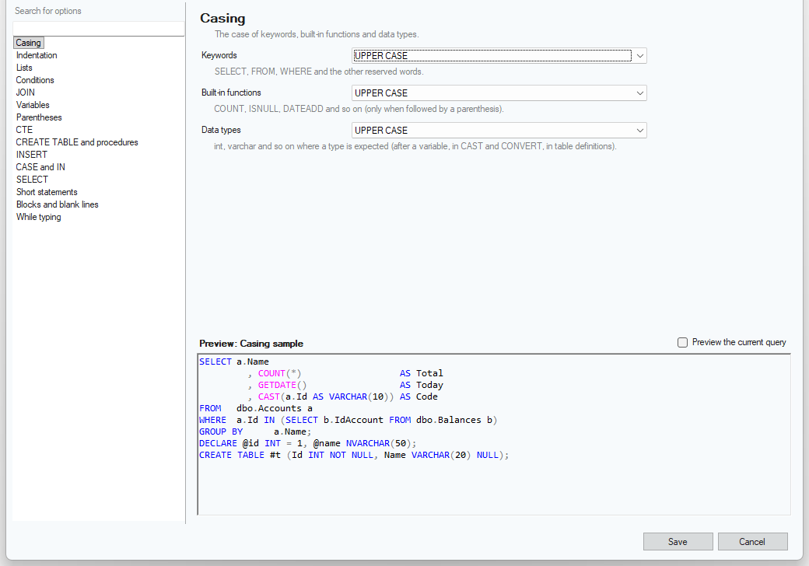

Formatting
Format a script or a selection with a named style. The same style decides how lists, keywords and joins are laid out when SQL Prompter inserts them.
Commands
| Command | What it does |
|---|---|
| Format Document Ctrl+K, Y | Formats the whole script with the active style. |
| Format Selection | Formats the selected statements. |
| Unformat Selection | Turns the selection into a single line: white space between tokens becomes one space, strings, quoted names and block comments are kept, a -- comment becomes /* ... */, a GO line stays on its own line. |
| Formatting Styles > Style | A submenu to switch the active style; Edit Formatting Styles... opens the editor. |
The result replaces only the part of the text that differs, so a single Ctrl+Z undoes it. The status bar says how many statements were formatted and how many were kept as written.
Styles

There can be several named styles with one of them active. The bar at the top of the window has the style selector and the buttons New, Duplicate, Rename, Delete, Import... (a SQL Prompt style, .json) and Set as active. The options are a tree of groups, with a search box above it:
| Group | Options |
|---|---|
| Casing | Case of keywords, of built-in functions (only when followed by a parenthesis) and of data types. |
| Indentation | Use tabs; tab width (1-16 characters). |
| Lists | Commas before items; GROUP BY and ORDER BY items on separate lines; align aliases (the AS of a select list starts in one column); align items across clauses. |
| Conditions | Conditions of WHERE and HAVING on separate lines; align comparison operators; AND / OR start the line. |
| JOIN | ON on a new line; indent JOIN to the table. |
| Variables | Equals sign of a long SET @variable = value on a new line. |
| Parentheses | Subquery parenthesis on a new line; indent the contents of the subquery. |
| CTE | Parenthesis on a new line; indent contents; AS on a new line. |
| CREATE TABLE and procedures | Parenthesis on a new line; indent column definitions; align data types; procedure parameters on separate lines. |
| INSERT | Break the column list when the line is longer than a limit; column parenthesis on a new line; VALUES rows on separate lines. |
| CASE and IN | Keep CASE shorter than a limit on one line; expression of a simple CASE on a new line; space inside IN parentheses. |
| SELECT | Line break after DISTINCT and TOP. |
| Short statements | Keep statements, subqueries and CREATE TABLE shorter than a limit (in characters) on one line; 0 turns it off. |
| Blocks and blank lines | Indent BEGIN ... END; indent BEGIN and END under their IF / WHILE / ELSE; keep one blank line between statements. |
| While typing | Case keywords while typing (a reserved word gets the keyword case as soon as you type a space, parenthesis, comma or semicolon after it). |
Use the search box to find an option by its words instead of opening the groups. Save stores all styles in the settings file; Cancel drops the changes.
Importing a SQL Prompt style
Settings > Formatting > Import a SQL Prompt style... (or Import... in the styles window) reads a style exported from SQL Prompt (.json) and adds it as a new style, which becomes the active one; the other styles are kept. A report lists what was applied and what has no counterpart. Imported options include the case options, indentation, lists, ON placement, GROUP BY / ORDER BY, alignment of aliases and comparison operators, items across clauses, the join table, the SET equals sign, BEGIN / END, parentheses, CTEs, CREATE TABLE, procedure parameters, INSERT, CASE and IN.
What else uses the style
- The case of keywords inserted from the list (Keyword case: Follow the formatting style).
- The layout of inserted column lists,
VALUES,EXECparameters and the expanded*(see Completion). - Fix Code Analysis Issues and the other refactorings that rewrite text.